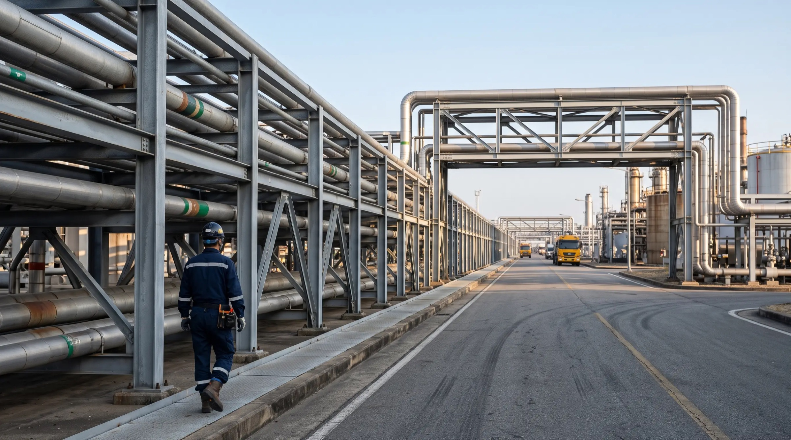
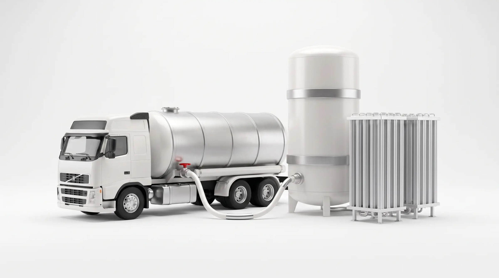

파이프라인
생산기지와 고객 사업장을 전용 배관으로 연결해 기체 상태의 가스를 24시간 연속으로 공급합니다.
수송 차량이 필요 없으며, 산업단지 안의 여러 고객을 하나의 배관 네트워크로 연결해 공급할 수 있습니다.
- 주요 가스
- 산소, 질소, 수소, 아르곤
- 대상
- 석유화학·정유·철강 산업단지의 대규모 수요처, 반도체 클러스터

사업정보
SK에어플러스는 고객의 사용량과 공정 조건에 따라 파이프라인·On-site·Bulk 방식으로 가스를 공급하며, 필요한 경우 두 가지 방식을 함께 운영합니다.
| 구분 | 파이프라인 | On-site | Bulk |
|---|---|---|---|
| 정의 | 생산기지에서 고객까지 전용 배관으로 기체 공급 | 고객 사업장 안에 생산설비를 구축·운영해 현장에서 생산·공급 | 액화가스를 탱크로리로 운송해 고객 저장탱크에 충전 |
| 적합 수요 | 대규모·연속 | 중대규모·연속 | 중소규모·변동 |
| 주요 가스 | O₂, N₂, H₂, Ar | N₂ 중심(O₂, Ar 가능) | 액화 O₂·N₂·Ar, 액화탄산 |
| 고객 측 설비 | 인입 배관, 계량설비 | 부지·유틸리티 제공(설비는 당사 투자·운영) | 저장탱크, 기화기 |
| 계약 형태 | 장기 공급계약 | 장기 공급계약 | 정기·수시 배송 |
| 특징 | 수송 차량 없이 대량 공급 | 수송·액화 에너지 절감, 고객 맞춤 설계 | 빠른 도입, 전국 배송망 |
생산기지와 고객 사업장을 전용 배관으로 연결해 기체 상태의 가스를 24시간 연속으로 공급합니다.
수송 차량이 필요 없으며, 산업단지 안의 여러 고객을 하나의 배관 네트워크로 연결해 공급할 수 있습니다.

고객 부지 안에 공기분리장치 등 생산설비를 당사가 투자·설치·운영하고, 고객은 사용한 가스만 구매합니다.
수송과 액화 과정이 없어 에너지 사용과 탄소 배출이 줄고, 사용량·순도·압력을 고객 공정에 맞춰 설계합니다. 원격 모니터링과 백업 저장설비를 함께 운영합니다.

초저온 액화가스를 전용 탱크로리로 운송해 고객 사업장의 저장탱크에 충전합니다.
고객은 기화기로 필요한 양만큼 기체로 바꿔 사용하며, 당사는 탱크 잔량을 원격으로 확인해 배송 시점을 관리합니다. 파이프라인·On-site 고객의 백업 수단으로도 운영합니다.
| 고객 조건 | 파이프라인 | On-site | Bulk |
|---|---|---|---|
| 사용량 | 매우 큼(연속) | 큼(연속) | 작거나 변동 |
| 생산기지와의 거리 | 인접(배관 연결 가능) | 무관(현장 생산) | 배송권 내 |
| 도입 기간 | 배관 공사 필요 | 설비 구축 필요 | 짧음(탱크 설치) |
| 초기 투자 | 배관 인프라 | 당사 투자 | 저장탱크·기화기 |
고객 조건별 참고 기준이며, 실제 공급방식은 현장 조건을 검토해 제안합니다.